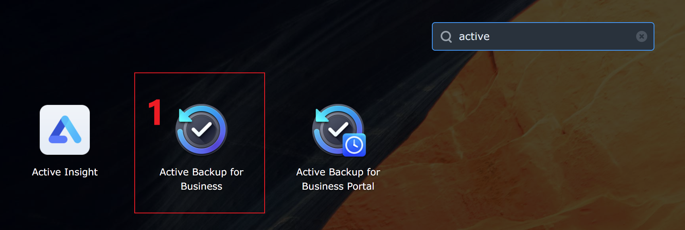
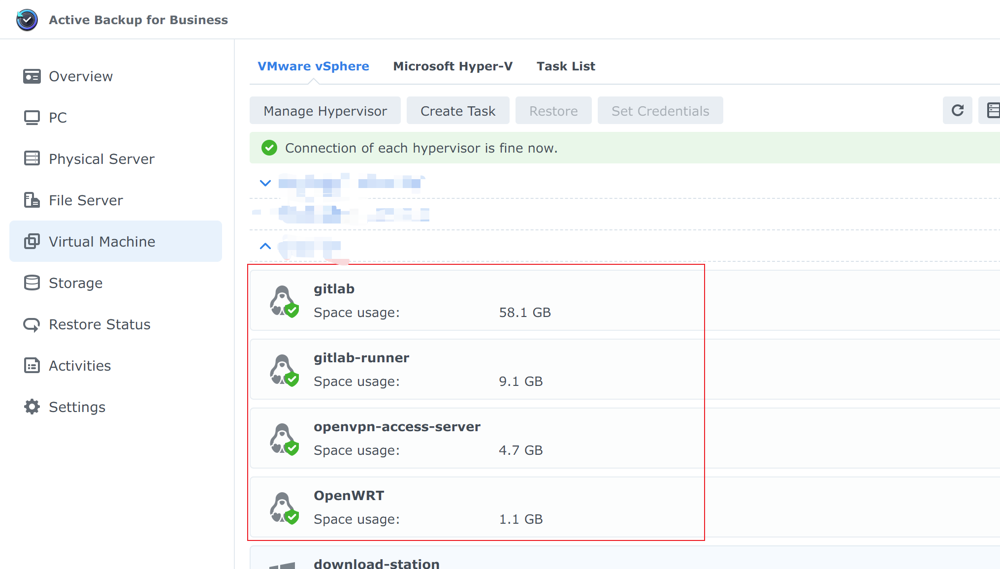
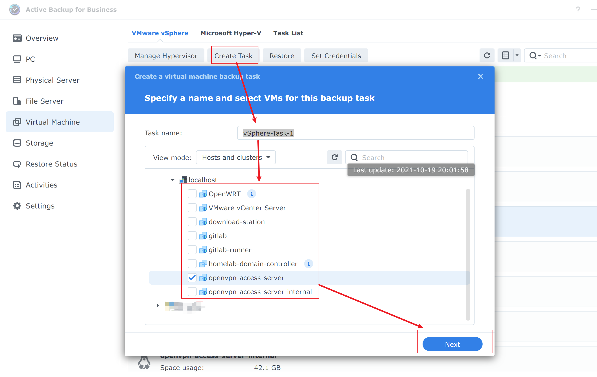
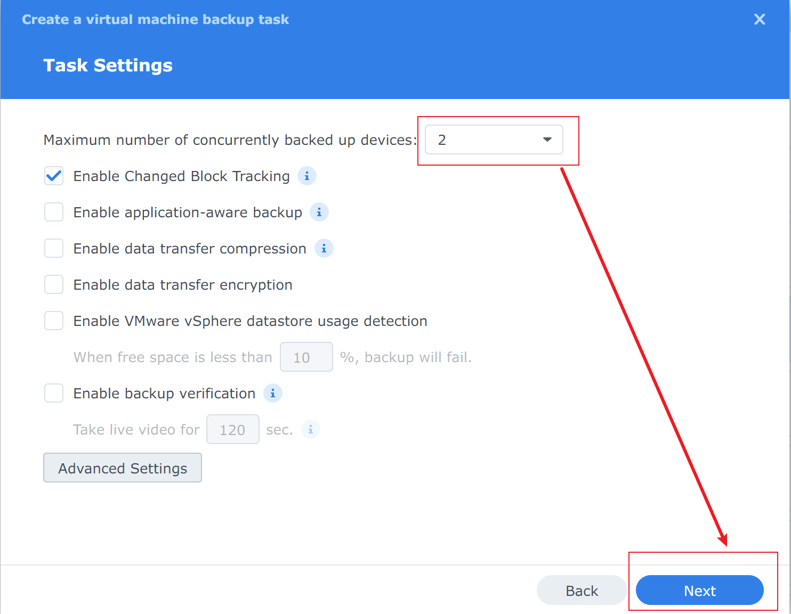
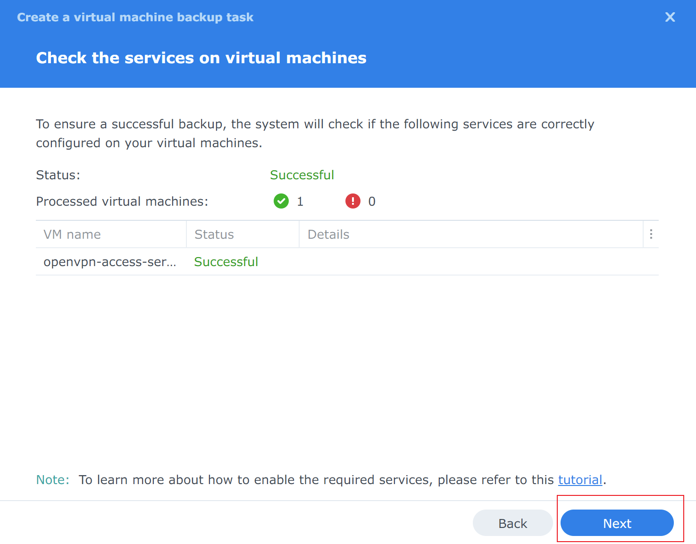
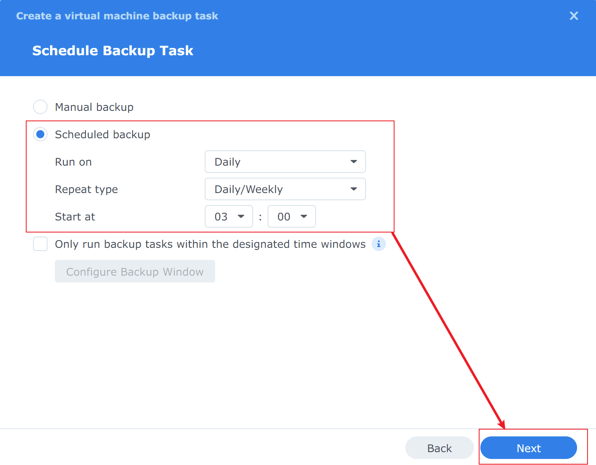
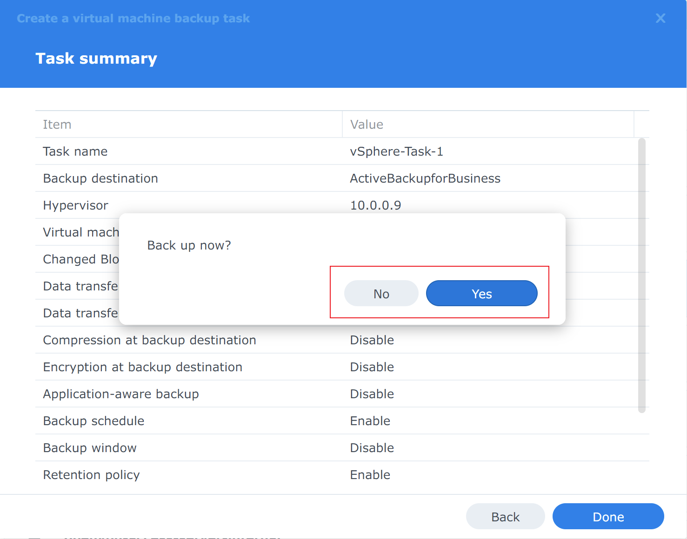
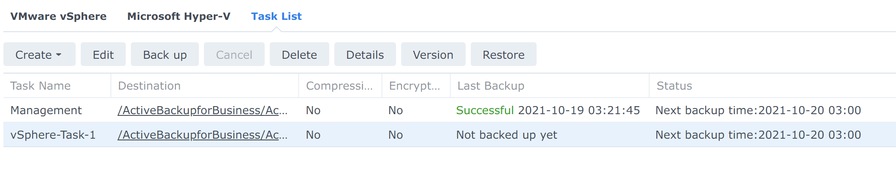
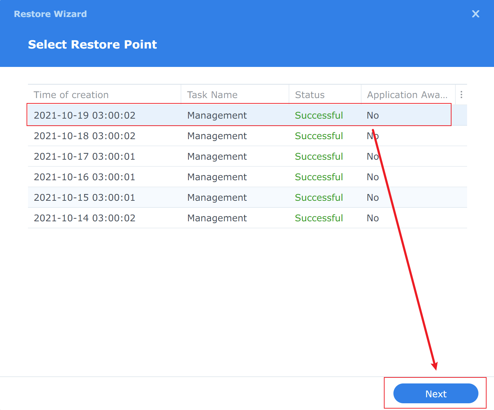
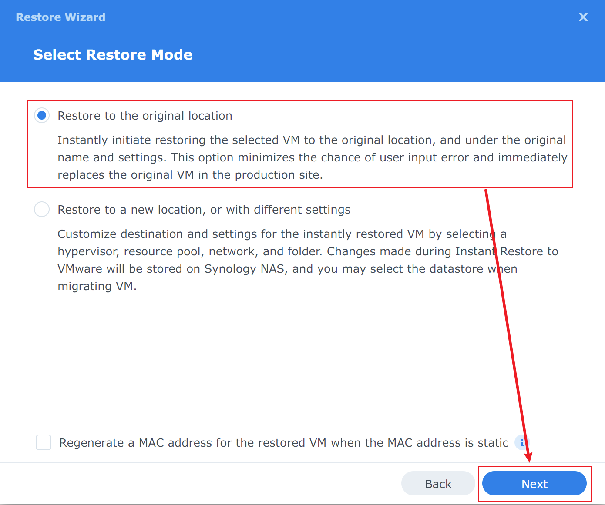

Backing Up vSphere Virtual Machines with Synology NAS
TL;DR
The general idea is to use the Synology package Active Backup for Business to back up VMware vSphere virtual machines in a Homelab environment.
Data disaster recovery is important — much like wearing a seatbelt when driving or a helmet when riding a motorcycle, it’s all about safety. In this post, we’ll walk through how to use a Synology NAS to back up virtual machines in vSphere.
Active Backup for Business
Active Backup for Business is a package available for Synology NAS.
Key features:
- Supports backup of Windows servers/PCs, Linux servers, SMB/rsync file servers, and VMware vSphere/Microsoft Hyper-V virtual machines
- Flexible scheduling and retention policies for customizable backup strategies
- Supports data restoration, including full device restore, instant restore, and granular file restore
For more details, refer to the Active Backup for Business Technical Specifications.
Creating a Backup Task from Scratch
Step 1: Install and Open Active Backup for Business
Install Active Backup for Business from Package Center — the package is free, which is great.
Once installed, open it.

Step 2: Add a Hypervisor
A hypervisor, also known as a virtual machine monitor (VMM), is software that creates and runs virtual machines (VMs).
Follow the steps shown below to add your ESXi host or vCenter:

After adding it, you’ll be able to see the ESXi or vCenter machines in the interface, as shown below.

Step 3: Create a Backup Task

During the creation process, you typically specify a backup task name (in the screenshot above it’s vSphere-Task-1), then choose whether to back up one VM or multiple VMs (openvpn-access-server is selected above). Click Next.

From the list, select a shared folder to store the backup data. When the package is installed, a shared folder named ActiveBackupforBusiness is created by default. Click Next.

Click Next to continue.

In this step, you configure the backup task settings. You can use the default configuration or adjust it to suit your needs. Click Next.

This is a summary/review page. If everything looks good, click Next.

This is an important step. By default, backups are set to manual. It is recommended to use scheduled backups instead, so no manual intervention is required — this makes the backup much more meaningful. Click Next.

This section configures the retention policy, which is highly recommended. Choose the settings that fit your situation, then click Next.

This section configures restore permissions. Click Next.

This is the overall summary of the backup task. Review it, and if everything looks correct, click Finish. A dialog will appear asking whether to run the backup now — choose based on your preference.

In the task list, you can now see the newly created backup task along with its last backup status and the time of the next scheduled backup.
Step 4: Backup
Scheduled backup tasks will be triggered automatically, while manual backups need to be triggered by hand.
Restore

Select the backed-up virtual machine from the VM list, then click Restore.

Choose a backup version from the version list, then click Next.

Select restore to VMware vSphere, then click Next.

Choose between a quick restore or a full restore.
Quick Restore: Mounts the NAS disk to ESXi as a Datastore.
Full Restore: Copies the backup data into the ESXi Datastore.
Choose based on your situation, then click Next.

Select where to restore the virtual machine — you can restore it to its original location or change it to a new location. Click Next.

Review the settings, and if everything is correct, click Finish to begin the restore.
Summary
In a Homelab environment, using a NAS to back up data is an effective way to ensure data safety.
Always make multiple backups of important data.